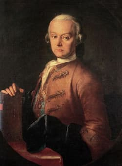
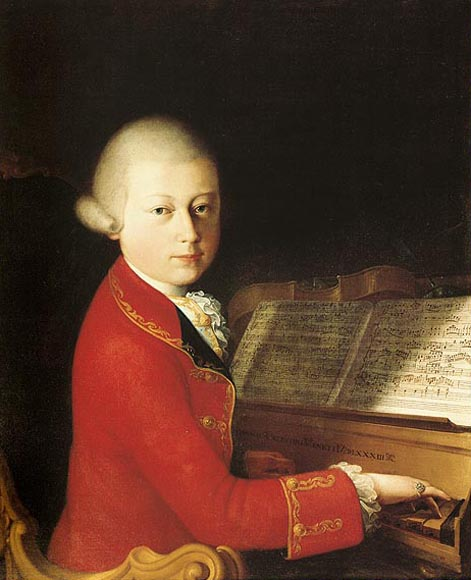

The son of a minor composer who held a position at the episcopal court of Salzburg, he displayed complete mastery of the three operatic genres of his day: opera seria (serious opera, usually based on classical or mythological subject matter); opera buffa (comic opera), and Singspiel (a German form of theatre, akin to a musical, i.e. with sung set numbers interspersed with spoken dialogue). Read on to learn more about Mozart, including some of his most famous music and opera compositions, along with a summary of his life and the importance of his works today.

Wolfgang Amadeus Mozart was the youngest of seven children, born to parents Leopold Mozart and Anna Maria Mozart nee Perti on 27 January 1756. Unfortunately, five of Anna and Leopold’s children died in infancy: the only two to survive were Mozart and his older sister Maria Anna (who was nicknamed Nannerl). His father was himself a musician; he was appointed fourth violinist in the musical establishment of the ruling Prince-Archbishop of Salzburg (Salzburg being Mozart’s birthplace). Leopold was also a minor composer and had a lot of teaching experience. When Mozart began composing short pieces of music at the age of four or five, he would play them to his father who would write them down. Mozart was eight when he wrote his first symphony – this was most probably transcribed by Leopold. To begin with, Mozart’s father was his only teacher – not only did he teach him music, but also academic subjects and languages. Once Mozart’s talents became clear, Leopold decided to give up composing. The family travelled frequently, taking Wolfgang and Nannerl around Europe to perform as child prodigies. They began these performances in the Imperial Courts in Vienna and Prague, and then undertook a three-and-a-half-year-long concert tour. The tour took them to the courts of Munich, Mannheim, Paris, London, Dover, The Hague, Amsterdam, Utrecht, Mechelen, back to Paris and then home via Zurch, Donaueschingen and Munich. This tour was instrumental in introducing Mozart to other musicians, and he familiarised himself with the works of other composers. One of his greatest influences during this time was Johann Christian Bach, who he visited in London in 1764 and 1765.
Although Mozart’s earliest experiences of opera were in his native Salzburg, it was during his travels that he became more fully acquainted with the contemporary operatic scene. For example, he saw Alceste, one of Gluck’s so-called ‘reform’ operas, in Vienna in 1767. Its impact can be detected in two of his earliest opera seria, Mitridate (1770) and Lucio Silla (1772), as well as his earliest acknowledged operatic masterpiece, Idomeneo and even Don Giovanni. Whereas many of his contemporaries concentrated on opera, Wolfgang Amadeus Mozart’s compositions include operatic composition punctuated by orchestral and chamber music, and concertos. His golden decade in Vienna (1781–91) was marked by his three-opera collaboration with the librettist, Lorenzo Da Ponte: The Marriage of Figaro, Don Giovanni and Così fan tutte represent the peak of his achievement in opera and, indeed, are the highpoint of eighteenth-century comic opera. While in Vienna, he also composed what are widely considered to be two of his greatest works – Mass in C Minor and Piano Concerto 21.

The final years of Mozart’s life were a time of great productivity. He composed works such as his Clarinet Concerto, Symphony No. 40 in G Minor, Ave Verum Corpus, Lacrimosa and Requiem in D Minor (although this was unfinished at the time of Mozart’s death). Mozart’s final months in 1791 were dominated by two equally rich operatic works: The Magic Flute, a German Singspiel and, an allegory of his own commitment to Freemasonry, in which the popular and the serious sit comfortably side by side; and La clemenza di Tito, a concise opera seria composed for the coronation of the new emperor.
Mozart’s musical forms in his mature operas was always determined by dramatic requirements, ensuring that the musical items come from the character’s inner psychological drama or from the outer drama of the action. He was the complete master of ensembles and act finales, examples of which can be found in any of the Da Ponte operas. At the same time, he could always explore a character’s psychological mood through the solo aria, even in the fastest-moving comedy. Mozart remains the dramatic composer closest to Shakespeare in achievement, whose reputation like that of Shakespeare continues to grow. Whereas in the eighteenth century his music was regarded as over-complicated and even erudite, in the nineteenth he was considered too simple, even obvious for the prevailing romantic mood Shaw described Mozart as ‘a vapidly tuneful infant phenomenon’). It is only in the last century that the depth of his emotional world has been fully recognised and appreciated. Mozart, like Shakespeare, is everywhere: he has featured in fiction, drama and film (not least Peter Shaffer’s Amadeus), on television and even in video games.